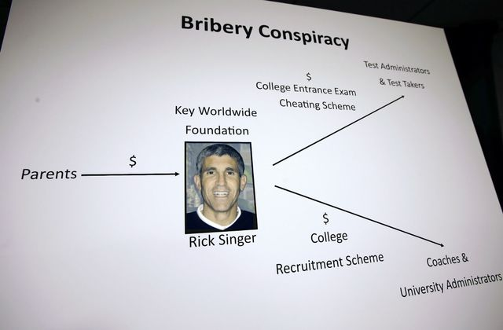
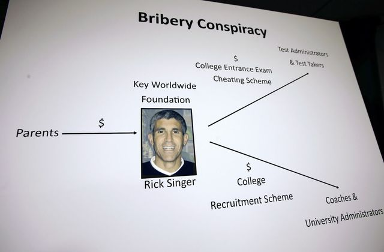

Here's everyone who has been sentenced in the college admissions scandal so far
Sentencings are ongoing for the college admissions scandal, in which federal prosecutors say parents paid about $25 million to get their students into elite schools like the University of Southern California, Stanford, and Yale.
Court documents reviewed by Insider say the scheme involved bribing college athletic coaches to recruit students regardless of their athletic ability and bribing entrance exam administrators to falsify ACT and SAT answers. Federal prosecutors have charged more than 50 people.
Prosecutors say the scheme was led by William "Rick" Singer, a so-called college-prep professional who ran a sham charity that was found to be at the center of the scandal. He has pleaded guilty.
Dozens of wealthy people, including actors Felicity Huffman and Lori Loughlin, as well as CEOs, high-profile lawyers, and college coaches were charged as part of the scheme.
Here's the full list of people who have been sentenced in the college admissions scandal
Mack DeGeurin contributed to this report.
Sentencings are ongoing for the college admissions scandal in which federal prosecutors say parents paid about $25 million to get their students into elite schools like the University of Southern California, Stanford, and Yale.
John Vandemoer
Former Stanford University sailing coach John Vandemoer was the first person to be sentenced as part of the college admissions scandal.
He sentenced to one day in prison, with time served. He was also sentenced to two years supervised release and has to pay a $10,000 fine.
Vandemoer was fired from Stanford and pleaded guilty to racketeering charges shortly after being indicted.
Prosecutors alleged in court documents that Vandemoer accepted $610,000 in bribes to facilitate the admissions of students as salinity recruits. Court documents say the funds were put into Stanford's sailing program.
Prosecutors had asked a federal judge in Boston to sentence Vandemoer to 13 months in prison.
Felicity Huffman was sentenced to 14 days in jail
Felicity Huffman was sentenced to 14 days in jail after admitting that she paid $15,000 to have her daughter's SAT answers falsified as part of the scandal.
The "Desperate Housewives" actor pleaded guilty to fraud charges in May. She was the first parent to be sentenced in the scandal.
Along with the 14-day prison sentence, Huffman was fined $30,000 and ordered to do 250 hours of community service. She will be on supervised release for a year.
An affidavit said that Huffman arranged for her eldest daughter, Sophia, to take the SAT at the West Hollywood Test Center, where her answers were later corrected. Huffman then disguised the $15,000 as a charitable donation for disadvantaged young people.
Court documents said Huffman arranged for her younger daughter, Georgia, to be part of the scheme as well but later decided against it.
"I am ashamed of the pain I have caused my daughter, my family, my friends, my colleagues, and the educational community," Huffman said in a statement in April after agreeing to plead guilty.
Prosecutors initially recommended four months in prison for Huffman but later lowered that to 30 days.
Parent Devin Slone was sentenced to 4 months in prison
Devin Sloane, the founder and chief executive of a drinking water and wastewater systems business in Los Angeles, California, was sentenced to four months in prison, 500 hours of community service, 2 years of supervised release, and has to pay a fine of $95,000.
Prosecutors alleged in court documents that Sloane paid Singer $250,000 to have his son admitted to the University of Southern California as a water polo recruit.
According to the affidavit, Sloane bought water polo gear of Amazon to stage a photoshoot with his son for a USC application.
Sloane told Singer that he purchased a ball and a cap off of Amazon for the photoshoot in a June 2017 email, court documents said. Sloane's son did not actually play water polo and his high school did not have a team.
When consulting with a graphic designer, Sloane was advised to take the photos in an indoor pool, court documents said.
Prosecutors alleged that a false athletic profile for Sloane's son called the teen a "perimeter player" who played for the "Italian Junior National Team" and the "LA Water Polo" team.
His son's high school counselor questioned the application because the school did not have a water polo team, according to court documents.
Sloane called the questioning "outrageous," court documents said.
Prosecutors asked a federal judge in Boston to sentence Sloane to one year and one day in prison, along with one year of supervised release, and a fine of $75,000.
Parent Stephen Semprevivo was also sentenced to 4 months in prison
Stephen Semprevivo is seen leading a federal courthouse in Boston on May 7, after pleading guilty to paying $400,000 to get his son Adam into Georgetown. Steven Senne/AP
In September, Stephen Semprevivo, a Los Angeles-based executive at a privately held provider of outsourced sales teams, was sentenced to four months in prison, two years of supervised release, 500 hours of community service, and a fine of $100,000.
Semprevivo pleaded guilty in May to conspiracy to commit mail fraud and honest services mail fraud, admitting to paying Singer $400,000 to get his son into Georgetown University as a recruited tennis player.
According to a criminal complaint filed in March, a portion of the funds went to Georgetown's then-tennis coach Gordon Ernst, who helped facilitate Semprevivo's son's recruitment to the school as a tennis player, despite knowing the teen did not play the sport.
Semprevivo's son, Adam Semprevivo, enrolled in Georgetown in Fall 2016. Adam Semprevivo filed a lawsuit against Georgetown in May, attempting to fight his expulsion.
Prosecutors had asked a judge to sentence Stephen Semprevivo to 18 months in prison, a year of supervised release, and a fine of $95,000.
Parent Gordon Caplan was sentenced to 1 month in prison
In October, Gordon Caplan, a Connecticut-based lawyer, was sentenced to one month in prison, a year of supervised release, 250 hours of community service, and a fine of $50,000.
Caplan pleaded guilty in April, admitting to paying Singer $75,000 to have his daughter's ACT exam answers changed.
Prosecutors asked the judge to sentence Caplan to eight months in jail, a year of supervised release, and a fine of $40,000. Caplan's lawyer had asked for a two-week sentence.
"I also need to tell [your daughter] when she gets tested, to be as, to be stupid, not to be as smart as she is," Singer said, according to court documents. "The goal is to be slow, to be not as bright, all that, so we show discrepancies."
In recorded phone conversations published in the criminal complaint, Caplan shows concern over being caught on multiple occasions.
Caplan was charged with conspiracy to commit mail fraud and honest services mail fraud.
After agreeing to plead guilty in April, Caplan released a statement in which he said he takes "full and sole responsibility" for his conduct, according to Bloomberg.
"I want to make clear that my daughter, whom I love more than anything in the world, is a high school junior and has not yet applied to college, much less been accepted by any school. She had no knowledge whatsoever about my actions, has been devastated to learn what I did and has been hurt the most by it," Caplan said.
The law firm Willkie Farr & Gallagher put Caplan on leave after his indictment. It is unclear what his current standing with the firm is.
Parent Agustin Huneeus Jr. was sentenced to 5 months in prison
Agustin Huneeus Jr., a Napa Valley vintner, was sentenced to five months in prison, 500 hours of community service, and a $100,000 fine.
Huneeus pleaded guilty in May, admitting to paying $300,000 to have his daughter's SAT score altered and have her designated as a water polo recruit to the University of Southern California. Because of the timing of Huneeus's indictment, his daughter was never admitted to USC.
Prosecutors had asked for a 15-month prison sentence, a year of supervised release, and a $95,000 fine. Huneeus had asked for two months in jail.
According to a criminal complaint, Huneeus worked with Singer on a fraudulent water polo profile for his daughter, and when they couldn't locate a suitable photo of her playing the sport, Singer used someone else. In one call detailed in court documents, Huneeus expressed concern over "this thing blow(ing) up in my face." Singer replied that it "hasn't in 24 years."
Huneeus was one the few parents in the scandal who implicated his daughter, the San Francisco Chronicle reported by informing her about the cheating scheme. Prosecutors said in a sentencing memorandum that Huneeus "embraced the fraud" by including his daughter.
The vintner stepped down as CEO of Huneeus Vinters after he was indicted in March.
Parents Gregory and Marcia Abbott were each sentenced to a month in prison
Gregory Abbott, the founder of food and beverage distributor International Dispensing Corp., and his wife, Marcia, were each sentenced to one month in prison.
They were each fined $45,000 and also must each perform 250 hours of community service. They are reporting to prison separately — Marcia in November, and Gregory in January.
At their sentencing, Marcia and Gregory Abbott apologized for their wrongdoing and said they were trying to help their daughter, who had been diagnosed with Lyme disease.
The New York-based Abbotts pleaded guilty in May to paying Singer $125,000 to improve their daughter's ACT and ACT scores.
The scheme involved their daughter going to a test center in late 2018 to take the exams and having a proctor correct her answers after she finished, according to a criminal complaint released by the Department of Justice.
According to court documents, the girl's ACT score jumped from a 23 to 35, and her math and literature SAT score went from mid-600s to a perfect 800 math score and a 710 in literature.
Prosecutors had initially asked for the Abbotts to both be sentenced to a year and a day in prison, a year of supervised release, and a fine of $55,000. At their sentencing, prosecutors asked for eight months in prison. Their lawyers asked for no time in prison.
Parent Peter Sartorio was sentenced to a year of probation
Peter Jan Sartorio was the first parent charged in the college admissions scandal to avoid jail time. Instead, the packaged food entrepreneur received a year of probation and was ordered to pay a $9,500 fine for paying $15,000 to have his daughter's ACT scores corrected. In addition to the fine, Sartorio was ordered to complete 250 hours of community service.
Sartorio is a Bay Area entrepreneur from Menlo Park, California and is the co-founder of Elena's Food Specialties. According to a criminal complaint filed in March, Sartorio's daughter scored a 27 out of a possible 36 on the ACT with the help of two corrupt protectors enlisted by Rick Singer. The score put Sartorio's daughter in the 86th percentile of test-takers. While that was her first time taking the ACT, the marks were a noticeable improvement over scores she received on a PSAT test she had taken previously where she landed between the 42nd and 51st percentiles. Prosecutors say Sartorio made three separate cash payments to Singer between June 16 and June 20, 2017, totaling $15,000.
Sartorio was charged with conspiracy to commit mail fraud and honest services mail fraud. The Menlo Park dad pleaded guilty to the charges in May. Sartorio was the first parent charged in the sweeping college admissions scandal to plead guilty to his charges.
During Sartorio's sentencing, Assistant US Attorney Kristen Kearney said the food entrepreneur "shouldn't get a discount just because he isn't as wealthy or as well known as his codefendants," according to Law360 reporter Chris Villani.
Later in the hearing, Sartori apologized for his actions.
"I recognize what I did was wrong. I offer no excuses, there's no justifications for those actions," Sartorio said.
The probation sentencing came despite a request from prosecutors for jail time. Prosecutors asked the judge to sentence Sartotio to one month in jail and pay a $9,500 fine, which would have come out to the same jail time requested for actress Felicity Huffman.
"I recognize what I did was wrong. I offer no excuses, there's no justifications for those actions,"
-Peter Sartorio
Parent Marjorie Klapper was sentenced to 3 weeks in prison
Marjorie Klapper, a jewelry business owner from Menlo Park, California, was sentenced to three weeks in prison for paying $15,000 to have her son's ACT answers rigged in 2017.
She was also fined $9,500 and ordered to perform 250 hours of community service.
Prosecutors had asked Klapper to be sentenced to four months in prison. Her lawyers had asked for house arrest and a $20,000 fine.
Klapper pleaded guilty to fraud charges in May.
Her son was also one of many told by college admissions scandal ringleader William "Rick" Singer to claim to be racial minorities on applications, The Wall Street Journal reported in May.
Singer reportedly told parents that not having their students lie about their race would put them at a "competitive disadvantage."
Klapper said Singer's team changed her son's race on his applications without her knowledge, according to CBS San Francisco.
At her sentencing, Klapper apologized to her son, saying: "I cast a dark shadow on my family and that is not what I intended," according to Law360 reporter Chris Villani.
Parent Robert Flaxman was sentenced to 1 month in prison
Robert Flaxman, a California-based real estate developer was sentenced to one month in prison for paying $75,000 to have his daughter's ACT answers rigged.
He was also ordered to pay a $50,000 fine and perform 250 hours of community service.
Prosecutors had asked that Flaxman be sentenced to eight months in prison and a $40,000 fine. His lawyers asked for supervised release and community service.
In an indictment filed in March, prosecutors said Flaxman paid $75,000 to have a proctor feed answers to his daughter during her 2016 ACT exam. They said his daughter used the score to get into an undisclosed college. She was suspended for a semester after news of the scheme broke, according to the Associated Press.
Flaxman's lawyers said the school Flaxman's daughter went to was "excellent," but not elite, arguing that his role in the scandal was not about "ego gratification."
"I apologize to the parents and students who worked hard and don't cheat, no matter what," Flaxman said after his sentencing, according to Law360 reporter Chris Villani. "I'm sorry."
Parent Jane Buckingham was sentenced to 3 weeks in prison.
Jane Buckingham, a Los Angeles, California-based marketing executive, was sentenced to three weeks in prison for paying $50,000 to have a proctor take the ACT exam for her son in 2018.
Prosecutors had asked that she be sentenced to six months in prison. Her lawyers asked for a year of probation, a fine, and community service.
Prosecutors say the proctor who took the ACT for Buckingham's son exam got him a 35 out of 36, ranking in the 96th percentile nationally, the Associated Press reported.
Buckingham has apologized for her role in the scheme, saying she has "absolutely no excuse."
She was the final parent who pleaded guilty to be sentenced by Judge Indira Talwani in the college admissions scandal.
Parent Jeffrey Bizzack was sentenced to 2 months in prison
California businessman Jeffrey Bizzack, of Solana Beach, California, was sentenced to two months in prison for paying Singer $250,000 to have his son admitted into USC as a purported volleyball recruit.
He was also ordered to serve three years on supervised release and pay a $250,000 fine.
Prosecutors had asked Bizzack to be sentenced to nine months in prison and a $75,000 fine.
Bizzack, 59, pleaded guilty to one count of conspiracy to commit mail fraud and honest services mail fraud in June.
Parent Toby MacFarlane was sentenced to 6 months in prison.
Insurance executive Toby MacFarlane, 56, of Del Mar, California, was sentenced to six months in prison after admitting to paying $450,000 to secure his daughter's and son's admissions to USC as purported soccer and basketball recruits.
He was also sentenced to two years of supervised release and ordered to complete 200 hours of community service and pay a $150,000 fine.
MacFarlane pleaded guilty to one count of conspiracy to commit mail fraud and honest services mail fraud in June.
According to an indictment filed in March, MacFarlane tried to pass his son off as a 6-foot-1 basketball player as part of the scheme. His son is 5-foot-five.
Prosecutors had asked for MacFarlane to be sentenced to a year and a day in prison, arguing that he tried the scheme twice.
His lawyer asked for leniency, saying MacFarlane was going through "period of depression and self loathing following his divorce," according to Law 360 reporter Chris Villani.
Parent Douglas Hodge was sentenced to 9 months in prison.
Former CEO of Pacific Investment Management Company (Pimco) Douglas Hodge was sentenced to nine months in prison. It is the harshest sentence doled out in the scandal so far.
Hodge, from Laguna Beach, California, was also ordered to complete 500 hours of community service and pay a $750,000 fine.
Judge Nathaniel Gorton, who oversaw Hodge's case, said at the sentencing, according to Law 360 reporter Chris Vilani: "There is no term in the English language that describes your conduct as well as the Yiddish term 'Chutzpah,'" which, by definition, means "shameless audacity."
Hodge pleaded guilty in October, admitting to paying more than $500,000 in bribes to facilitate the University of Southern California athletic recruitments of his daughter and one of his sons in 2013 and 2015.
Prosecutors said Hodge's interactions with college admissions scandal ringleader William "Rick" Singer date back years.
According to the criminal complaint, Hodge first contacted Singer in 2008 to ask for help on his daughter's application to Georgetown University. Court documents say Hodge also contacted Singer in 2018 to discuss his youngest son's admission to Loyola Marymount University.
At Hodge's sentencing, prosecutors asked for Hodge to be sentenced to two years in prison, saying his bribes to Singer spanned a decade.
"There is no parent sentenced to date who benefited more from Singer's scheme than Doug Hodge," prosecutors said.
In a statement he read in court, Hodge said he had the "deepest remorse" for his actions, and said they came from a place of love for his children.
"I am committed to doing all that I possibly can to earn forgiveness for those I have wronged — including my own children — and to repair the harm my actions may have caused," he said.
Former University of Texas at Austin tennis coach Michael Center was sentenced to 6 months in prison.
Michael Center, the former head coach of the men's tennis team at the University of Texas at Austin, was sentenced to six months in prison for accepting a $100,000 bribe in the college admissions scandal.
Center was also given one year of supervised release, ordered to forfeit $60,000, and fined $20,000.
The former tennis coach pleaded guilty to one count of conspiracy to commit mail fraud and honest services mail fraud in April 2019, admitting to accepting a bribe to secure the admission of a purported student-athlete to UT Austin.
Parent Elizabeth Henriquez was sentenced to 7 months in prison.
Elizabeth Henriquez, from Atherton, California, was sentenced to seven months in prison for paying $450,000 in the scheme.
She was also ordered to pay a $200,000 fine and conduct 300 hours of community service. Upon leaving prisons he will face two years of supervised release.
Henriquez and her husband, Manuel Henriquez, have pleaded guilty in the college admissions scandal, admitting to paying $50,000 to have their daughters' SAT and ACT exam answers falsified and paying $400,000 to guarantee their older daughter's admission to Georgetown University as a purported tennis recruit.
Henriquez has until June 30 to report to prison. At her sentencing, Judge Nathaniel Gorton told her he has "every confidence" that the novel coronavirus pandemic would subside by then.
"I will not forfeit the obligation of a federal judge to impose a sentence that is warranted by the defendant's conduct, here, that is a period of incarceration," he said of future sentencings, according to Law 360 reporter Chris Villani.
Parent Xiaoning Sui was given time served after spending 5 months in a Spanish jail in connection to college admissions scandal charges
Xiaoning Sui, 48, of Surrey, British Columbia, Canada, was sentenced to time served for paying Singer $400,000 to facilitate her son's admission to the University of California, Los Angeles, as a purported soccer recruit.
Sui was arrested in Spain on September 16, 2019, in connection to the college admissions scandal. She was held in a Spanish jail for five months ahead of her Boston plea hearing in February 2020.
In February she agreed to plead guilty to one count of federal programs bribery.
US District Court Judge Douglas P. Woodlock sentenced her to time served on May 18, for the time she spent in the Spanish jail. She was ordered to pay a fine of $250,000 and agreed to forfeit the $400,000 that she paid Singer to facilitate the crime.
Parent Karen Littlefair was sentenced to 5 weeks in prison.
Karen Littlefair, from Newport Beach, California, was sentenced to five weeks in prison after pleading guilty to paying $9,000 to have someone secretly take classes on her son's behalf to facilitate his graduation from Georgetown University.
Littlefair will also spend two years on supervised release, provide 300 hours of community service, and pay a fine of $209,000, according to a press release from the US Attorney's Office District of Massachusetts.
Prosecutors said that the college admissions scandal's ringleader, William "Rick" Singer had a third party person take five online classes for Littlefair's son. In one class, the third party person organized to have a "stand in" for Littlefair's son on video-conferenced classes. Her son graduated from Georgetown in May 2018.
Littlefair pleaded guilty on January 22, 2020.
Parent David Sidoo was sentenced to 90 days in prison.
Businessman David Sidoo, from Vancouver, Canada, was sentenced to 90 days in prison after pleading guilty to paying Singer $100,000 to have someone take SAT exams in place of his two sons.
He was also sentenced to one year of supervised release and ordered to pay a fine of $250,000.
Sidoo initially pleaded not guilty in the college admissions scandal but flipped his plea in March 2020.
In his sentencing hearing, Sidoo apologized for participating in the scheme.
Judge Nathaniel Gorton said Sidoo displayed an "unbelievable lack of integrity, morality and common sense" in participating.
Sidoo is scheduled to start his prison sentence on September 23
Parent Manuel Henriquez was sentenced to 6 months in prison
Manuel Henriquez was sentenced to six months in prison for paying $450,000 in the scheme alongside his wide, Elizabeth Henriquez.
He was also ordered to pay a $200,000 fine, complete 200 hours of community service, and spend two years on supervised release, according to the US Attorney's Office, District of Massachusetts.
Henriquez and his wife, Elizabeth Henriquez, pleaded guilty in the college admissions scandal in October 2019, admitting to paying $50,000 to have their daughters' SAT and ACT exam answers falsified and paying $400,000 to guarantee their older daughter's admission to Georgetown University as a purported tennis recruit.
Elizabeth Henriquez was sentenced to seven months in prison for her role in the scheme in March, and she was behind bars at the time of her husband's sentencing.
Parent Mossimo Giannulli was sentenced to 5 months in prison
Fashion designer Mossimo Giannulli — the husband of "Full House" star Lori Loughlin — was sentenced to five months in prison for paying $500,000 to guarantee his daughters' admissions to the University of Southern California.
A plea deal approved by US District Judge Nathaniel Gorton also orders him to pay a $250,000 fine, do 250 hours of community service, and spend two years on supervised release after serving his prison sentence.
Giannulli and Loughlin pleaded guilty in May, admitting t0 paying $500,000 to have the college admission scandal's ringleader, William "Rick" Singer, guarantee their daughters' admissions to the University of Southern California as coxswains for the school's crew team, despite never competing in the sport.
The scheme included creating fake athletic profiles and falsified resumes for their daughters, Olivia Jade and Isabella, in which photos showed them using rowing machines.
Giannulli and Loughlin had spent more than a year arguing in court that they were not guilty, and just weeks before their plea they participated in a concerted push for the charges to be dropped.
Parent Lori Loughlin was sentenced to 2 months in prison
Lori Loughlin was sentenced to two months in prison hours after her husband was sentenced to five months behind bars.
Loughlin was ordered to pay a $150,000 fine, do 100 hours of community service, and spend two years on supervised release after serving her prison sentence.
She and Giannulli pleaded guilty in May 2020, admitting to paying $500,000 to guarantee their daughters' admissions to the University of Southern California.
Loughlin choked up as she made a statement before the court, in which she said she was "truly and profoundly and deeply sorry" for her role in the scheme.
"I made an awful decision. I went along with a plan to give my daughters an unfair advantage in the college admissions process," she said. "In doing so I ignored my intuition and allowed myself to be swayed from my moral compass."
"I thought I was acting out of love for my children, but in reality it undermined and diminished my daughters' abilities and accomplishments," she continued. "More broadly and more importantly, I now understand that my decisions helped exacerbate existing inequalities in society generally and the higher education system more specifically."
Parent Peter Dameris was sentenced to 1 day in prison
Parent Peter Dameris was sentenced to one day in prison — deemed time served — for paying $300,000 to have his son recruited to Georgetown University as a purported tennis player.
He was also ordered to pay a $95,000 fine and spend three years on supervised release, 12 months of which will be in home confinement.
Dameris, a 60-year-old from Pacific Palisades, California, pleaded guilty to one count of conspiracy to commit mail fraud and honest services mail fraud in June 2020.
As detailed in a press release from the Department of Justice,Dameris paid $300,000 to William Singer's sham charity, Key Worldwide Foundation, knowing the funds would be used to facilitate his son's admission to Georgetown.
Martin Fox, the former president of a private tennis academy, was sentenced to 3 months in prison.
Martin Fox, the former president of a private tennis academy in Texas was sentenced to three months in prison for participating in Singer's scheme.
He was also ordered to complete 250 hours of community service, pay a $95,000 fine, forfeit $245,000, and spend one year on supervised release.
Fox pleaded guilty to one count of conspiracy to commit racketeering in November 2019, admitting to working as a middleman between Singer and a testing center administrator in the college entrance exam scheme, and between Singer and college coaches to help students be recruited to universities as purported athletes.
He had initially pleaded not guilty, but changed his plea after learning another defendant, Michael Center, agreed to testify against him, prosecutors said in a sentencing memorandum seen by Insider.
In the sentencing memorandum, prosecutors said Fox profited at least $245,000 for his role in the scheme and facilitated further bribe payments worth thousands more dollars.
Parent Diane Blake was sentenced to 6 weeks in prison.
Parent Diane Blake, who alongside her husband Todd paid $250,000 to have their daughter admitted into USC as a purported volleyball recruit, has been sentenced to six weeks in prison, the US Attorney's Office in the District of Massachusetts said in a press release.
Blake, of Ross, California, was also ordered to complete 100 hours of community service, pay a fine of $125,000, and spend two years on supervised release.
Blake pleaded guilty to one count of conspiracy to commit wire and mail fraud and honest services wire and mail fraud in July.
When pleading guilty, she and her husband admitted to conspiring with Singer to facilitate their daughter's admission to USC through using a fake athletic resume and profile to be admitted into the school as a volleyball recruit, despite not playing the sport.
Blake and her husband paid $50,000 to the USC women's athletics and $200,000 to Singer's sham nonprofit as part of the scheme.
Parent Todd Blake was sentenced to 4 months in prison.
Parent Todd Blake, who alongside his wife Diane paid $250,000 to guarantee their daughter's admission to USC, was sentenced to four months in prison, the US Attorney's Office in the District of Massachusetts said in a press release.
Blake, of Ross, California, was also ordered to pay a $125,000 fine, complete 100 hours of community service, and spent two years on supervised release.
Like his wife, Blake pleaded guilty to one count of conspiracy to commit wire and mail fraud and honest services wire and mail fraud in July and also pleaded guilty to an additional count of conspiracy to commit money laundering.
The Blakes admitted to conspiring with Singer to get their daughter admitted into USC as a purported volleyball recruit, using a fake athletic profile and falsified resume in the process.
As part of the scheme, they paid Singer $200,000 through his sham charity and paid USC's women's athletics another $50,000.
College entrance exam administrator Niki Williams was sentenced to 1 year of probation.
Niki Williams, a former Houston Independent School District employee who administered ACT and SAT exams, was sentenced to one year of probation for accepting bribes from college admissions scandal ringleader William "Rick" Singer in a scheme to falsify student's tests.
Williams, 46, was also ordered to forfeit $12,500 as part of the sentence, according to a press release from US Attorney for the District of Massachusetts Andrew Lelling.
Williams pleaded guilty in September to one count of conspiracy to commit wire fraud and mail fraud and honest services wire fraud and mail fraud.
The school district employee from Houston, Texas, had allowed Singer's co-conspirator Mark Riddell to sit in on ACT and SAT exams and either help students answer questions or correct their answers after they finished.
Williams then allowed the falsified exams to be officially scored by the ACT and College Board.
Former UCLA soccer coach Jorge Salcedo was sentenced to 8 months in prison.
Jorge Salcedo, a former men's soccer coach at the University fo California, Los Angeles, was sentenced to eight months in prison, according to the US Attorney's Office for the District of Massachusetts.
Salcedo was also ordered to forfeit $200,000 and spend one year on supervised release.
The former soccer coach agreed to plead guilty in April 2020, admitting to accepting $200,000 in bribes to facilitate the admissions of two students as fake athletic recruits.
When Salcedo was charged, prosecutors said he worked with scandal ringleader Rick Singer to help admit students to UCLA in 2016 and 2018.
The first student was the daughter of California couple Davina and Bruce Isackson, who prosecutors say Salcedo helped get admitted as a purported soccer recruit.
Prosecutors said the Isacksons, who have also pleaded guilty in the case, paid Singer $250,000 in exchange for their daughter's admission to UCLA, and that $100,000 of the money went to Salcedo.
Prosecutors said Salcedo later accepted another $100,000 to help get the son of one of Singer's other clients, Xiaoning Sui, into UCLA as a purported soccer player in 2018. Sui has also pleaded guilty in the case.
 
